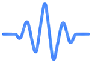
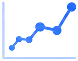
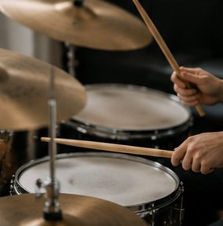
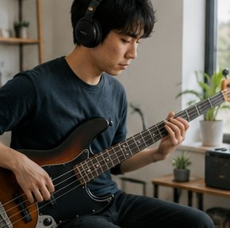

練習を記録する


練習記録
📈 練習時間の推移
過去7日間の楽器別練習時間をエリアグラフで表示しています。上達の積み上げを一目で確認できます。🎵 楽器別練習時間
各楽器の総練習時間を比較。得意な楽器と伸び代がひと目で分かります。🎯 スキル分析レーダー
ウォームアップ・基礎・曲・応用など、練習種別ごとのバランスをレーダーチャートで分析します。メトロノーム
チューナー
基準ピッチ 440Hz。マイクで音程を確認しながらチューニングできます。
AIアドバイス
使い方
記録する
楽器・メニュー・時間を入力して「記録する」を押すだけ。
可視化する
練習時間がグラフで自動集計され、推移が見えます。
分析する
AIが傾向を分析し、上達のアドバイスを提示します。
継続する
連続記録と達成度で、楽しく練習を習慣化できます。
コミュニティの声


よくある質問
Q: 記録データはどこに保存されますか？
A: ご使用のブラウザのローカルストレージに保存されます。他のデバイスとは共有されません。
Q: ブラウザを閉じても記録は残りますか？
A: はい、同じブラウザを使う限りデータは保持されます。
Q: 記録を削除するにはどうすればいいですか？
A: リセットボタン、またはブラウザのサイトデータをクリアすることで削除できます。
⚠️ 本ツールの結果は参考情報です。専門的判断は資格を持つ専門家にご相談ください。
📋 このツールの詳細
本ツールは、楽器練習記録・上達トラッカーWebツールを手軽に利用できる無料Webサービスです。登録不要でブラウザから直接ご利用いただけます。
よくある質問
- Q. 練習ログをつける効果は何ですか？
- 練習ログをつけることで、練習量と上達の相関が見えやすくなります。「どの曲に何時間費やしたか」「どの技術に苦手を感じているか」を可視化することで、偏りのない練習計画を立てられます。また、積み上げた練習時間を確認することが自己効力感（「自分はできる」という感覚）を高め、継続モチベーションになります。発表会・オーディション前には過去の練習ペースを参考に逆算スケジュールを立てることもできます。
- Q. 効率的な練習時間の長さはどのくらいですか？
- 質の高い集中練習であれば、1日30〜90分が多くの演奏家に推奨される時間帯です。長時間練習より「短時間・高集中・毎日継続」の方が記憶定着と筋肉の協調学習に有利とされています。特に楽器演奏では指や腕の筋肉の疲労を無視して練習すると、誤った動作が定着する「過練習」のリスクがあります。45〜60分練習したら10〜15分の休憩を入れるメリハリが、集中力と身体の安全を保ちます。本ツールで練習時間を記録し、無理のないペースを確認してください。
- Q. 練習の質を上げるコツはありますか？
- 効果的な練習の基本は「問題箇所の特定→分離→ゆっくり反復→テンポを戻す」という工程です。通し練習ばかりでなく、難しい箇所だけを取り出して集中的に練習する「部分練習」が上達の鍵です。また、ゆっくりしたテンポ（目標の50〜70%程度）で正確に弾く習慣は、速いテンポでも正確に演奏できる基礎を作ります。録音して客観的に聴くことで、自分では気づかない問題点を発見できます。
楽器練習記録・上達トラッカーの活用ガイド（記録・管理ツール）
楽器種類・練習内容・時間を記録。上達の軌跡を可視化してモチベーション維持に。登録不要・完全無料でご利用いただけます。ブラウザから無料で使えます。登録不要・完全無料でご利用いただけます。スマートフォンやタブレットからもアクセス可能です。
こんな方におすすめ
- 日々の記録を手軽につけたい方
- 継続的なデータを可視化したい方
- 目標達成の進捗を管理したい方
よくある質問
Q. 記録データはどこに保存されますか？
A. ブラウザのローカルストレージに保存されます。同じブラウザを使う限りデータは保持されます。
Q. データをエクスポートできますか？
A. CSV形式でのエクスポートに対応している場合があります。ツールの機能をご確認ください。
Q. スマートフォンで使えますか？
A. はい、スマートフォン・タブレット・PCすべてに対応しています。
楽器練習を効率化するための方法と記録管理ガイド
音楽・楽器の上達は「練習時間の長さ」より「練習の質」で決まります。意図的な練習（deliberate practice）を記録・振り返ることで、効率的な上達につながります。
- 「1万時間の法則」：超一流になるには1万時間の練習が必要という概念（ただし「質のある練習」が重要）
- 「意図的練習」：弱点に絞った繰り返し練習・フィードバックの取得が上達の核心
- 音楽の記憶：筋肉記憶（モーター記憶）は反復と睡眠で定着する
Q. 楽器の練習を効率よくするコツを教えてください。
A. 楽器練習を効率化するポイントとして「弱い部分に集中する：得意なフレーズばかり弾くのではなく、できない箇所を切り出して集中的に練習する」「テンポを落として練習する：難しい箇所はゆっくりのテンポで確実にできるようにしてから速度を上げる」「練習を録音する：客観的に自分の演奏を聴くことで改善点が明確になる」「小さなセクションに分割する：曲全体を通す前に4小節・8小節単位で完成度を高める」「規則性のある短時間練習：1日30分の毎日練習が週1回の長時間練習より定着しやすい」があります。
Q. 楽器の練習を継続するためのモチベーション維持方法は？
A. 練習継続のモチベーション管理として「好きな曲をレパートリーに入れる：技術的な練習だけでなく「自分が弾きたい曲」を常に1〜2曲持つことが継続につながる」「発表の機会を作る：友人・家族に聴かせる・アマチュアの演奏会等の「目標」があると練習に緊張感が生まれる」「練習記録をつける：練習した日・時間・今日できるようになったことを記録すると成長が可視化される」「コミュニティに参加する：同じ楽器を弾く仲間と交流することで刺激・情報・楽しさが増す」があります。
Q. 独学か音楽教室か、どちらが上達しやすいですか？
A. 独学と教室学習の違いと選び方として「独学のメリット：費用が安い・好きな時間に練習できる・好きな曲から始められる。YouTube・アプリ等の教材が充実している」「独学のデメリット：フォーム・姿勢の間違いに気づきにくい（変な癖がついて後から直すのが大変になる）」「音楽教室のメリット：プロの目でフィードバックをもらえる・弱点を指摘してもらえる・発表会等の機会がある」「費用目安：ピアノ教室・ギター教室等は月5,000〜15,000円程度」があります。最初の3〜6か月だけでも教室で基礎のフォームを習い、後は独学に切り替えるというハイブリッドアプローチも効果的です。